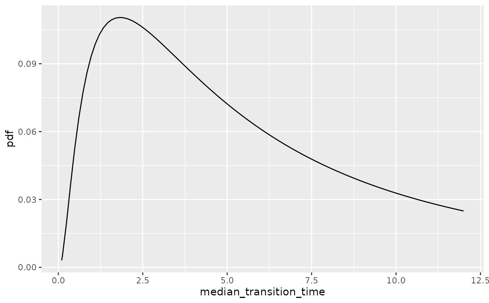
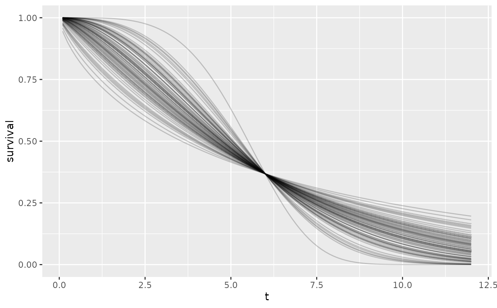
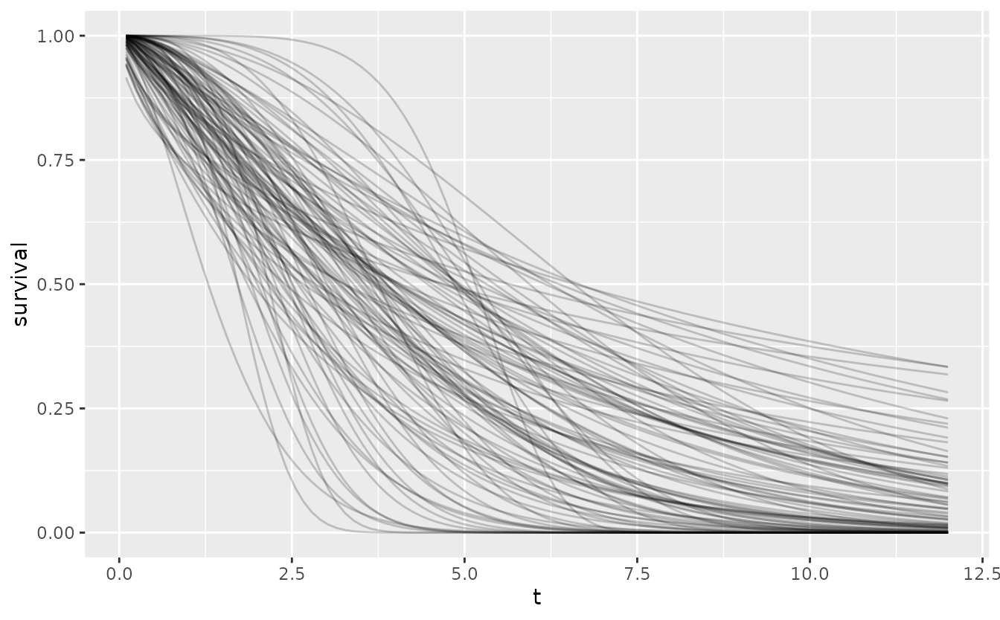

library(dplyr)
#>
#> Attaching package: 'dplyr'
#> The following objects are masked from 'package:stats':
#>
#> filter, lag
#> The following objects are masked from 'package:base':
#>
#> intersect, setdiff, setequal, union
library(tidyr)
library(ggplot2)
library(oncomsm)tl;dr: Identification of the shape parameter is difficult settings with little data and it is thus recommended to restrict the shape parameter to \(1\) (exponential model) if no historical data for the construction of an informative prior is available. A beta-mixture prior is suggested for the response probability and log-normal priors on shape and median time-to-next-event for the time-to-event components.
Why Weibull transition times?
In oncomsm, the distributions of the between-state
transition times are modeled as Weibull distributions. This restriction
in terms of the class of distribution is an implicit prior on the
transition times. The rationale is mainly due to a trade-off between
model flexibility and model complexity. The Weibull family is a two
parameter distribution family where the probability density function is
given by
\[ f(t|a,b) = \frac a b \bigg(\frac t b\bigg)^{a - 1} e^{-\big(\frac t b\big)^a} \quad t > 0 \] where \(a\) is the shape and \(b\) the scale parameter. The corresponding hazard function is given by
\[ h(t|a,b) = \frac b a \bigg(\frac t a\bigg)^{b - 1} \ . \]
The one-parameter exponential distribution is recovered as a special case when \(b = 1\). The Weibull distribution family adds flexibility in one important aspect since it allows the hazard rate to be either increasing (\(b<1\)) or decreasing (\(b>1\)) over time.
Combined with a three-state model, the Weibull-model provides quite some flexibility to model different disease progression characteristics without increasing model complexity too much. Compared to an exponential model, the three-state Weibull model has 7 instead of 4 parameters.
Other two-parameter survival distributions like the log-normal or
Gamma distribution are equally viable but the characteristics of their
hazard functions either more intricate (non-monotonous) or less flexible
than the Weibull distribution. Additionally, the Weibull distribution is
the only distribution which can be interpreted both in terms of
proportional hazards and accelerated failure times. Note that covariate
modeling is not yet implemented in oncomsm. Realistically,
proper model selection or the identification of more complex patterns in
the hazard function are unfeasible with small sample sizes. The Weibull
distribution is this primarily chosen due to the intuitive
interpretation of its parameters.
In settings with larger sample sizes model selection is more
feasible. The flexsurv
package covers a large number of common parametric survival models and
supports multi-state models as well.
Parameterization and prior classes
Both scale and shape are of interest. Hence, the reference prior for a Weibull distribution is proportional to \(1/(a\, b)\) (see, A note on non-informative priors for Weibull distributions). Any differentiable re-parameterization \(g^{-1}:g(a,b)\mapsto (a,b)\) with Jacobian absolute determinant \(1/(a\,b)\) thus leads to an (improper) uniform reference prior via pull-back of the reference prior on \((a,b)\). The transformation given by
\[ g^{-1}(a, b) = \Bigg(\ \log\bigg(\ \underbrace{a \log(2)^{1/b}}_{\text{median}} \ \bigg),\ \log(b) \ \Bigg) \]
that transforms scale \(a\) and shape \(b\) to the log-median and log-shape has Jacobian
\[ \begin{pmatrix} \frac 1 a & - \frac{\log(\log(2))}{b^2} \\ 0 & \frac 1 b \end{pmatrix} \]
and thus determinant \(1/(a\,b)\). In this sense, the median and log-shape are a natural parameterization for the Weibull distribution since the reference and Jeffreys prior coincide to the (improper) uniform distribution on this parameter space. A practical benefit of using the median instead of the raw scale parameter is that it has a more direct interpretation for practitioners.
To stabilize inference in settings with little data, it is often advisable to use weakly informative priors instead of completely non-informative ones. If one is only willing to specify the first two moments for a distribution on \(\mathbb{R}^2\), the normal distribution is the unique maximum entropy distribution. Assuming independence of shape and median, this implies that log-normal priors on both shape and median are a natural weakly-informative class of priors for the Weibull distribution.
For the response probability \(p\), a mixture prior consisting of a \(\operatorname{Beta}(\alpha,\beta)\) component with weight \(1-\eta\) and a uniform component, \(\operatorname{Beta}(1,1)\), with weight \(\eta\) is suggested.
Choice of hyperparameters
Directly specifying the mean and variance of the lognormal priors for shape and median time to event can be unintuitive. Instead, the \(0.05\) and \(0.95\) quantiles of the median and shape can be specified. These two constraints are then sufficient to identify the mean and variance parameters of the log-normal distribution.
If, for instance, very little is known about the median time to response but it is implausible that the median is lower than 1 or greater than 36 months, the lognormal prior on median time to response is depicted in the following plot.
res <- oncomsm:::get_mu_sigma(1, 36)
median_transition_time <- t
tibble(
median_transition_time = median_transition_time,
pdf = dlnorm(median_transition_time, res$mu, res$sigma)
) %>%
ggplot() +
aes(median_transition_time, pdf) +
geom_line()
This is the default vague prior on the median time to next event for all three transitions.
The choice of the prior on the shape is more difficult since the
shape parameter is harder to identify from only a few (interval
censored) data points per transition. To avoid convergence issues
oncomsm uses a default of a lognormal prior with 5%
quantile 0.9 and 95% quantile 2.5. If changes in the hazards over time
are expected, it can make sense to relax the prior at the risk of more
divergent transitions during sampling. A small number of divergent
transitions can usually be tolerated (default: up to 10%). In practice,
it is always possible to reduce the prior variability post-hoc or to
fine-tune the MCMC parameters to obtain stable inference[https://mc-stan.org/docs/2_19/reference-manual/divergent-transitions].
The following plot shows the variability in shape for fixed scale of this default prior.
res <- oncomsm:::get_mu_sigma(0.9, 2.5)
shape <- seq(0, 5, length.out = 100)
set.seed(251L)
tibble(
b = rlnorm(100, res$mu, res$sigma),
a = 6
) %>%
expand_grid(t = t) %>%
mutate(
survival = 1 - pweibull(t, b, a),
label = sprintf("a=%5.2f, b=%5.2f", a, b)
) %>%
ggplot() +
aes(t, survival, group = label) +
geom_line(alpha = .2)
The resulting Weibull density is
tibble(shape = shape, pdf = dlnorm(shape, res$mu, res$sigma)) %>%
ggplot() +
aes(shape, pdf) +
geom_line()A sample from the joint prior then reflects the overall variability.
set.seed(251L)
tibble(
b = rlnorm(100, oncomsm:::get_mu_sigma(0.75, 3)$mu,
oncomsm:::get_mu_sigma(0.75, 3)$sigma),
a = purrr::map_dbl(b, function(x) {
res <- oncomsm:::get_mu_sigma(2, 6)
rlnorm(1, res$mu, res$sigma) / log(2)^(1 / x)
}
)
) %>%
expand_grid(t = t) %>%
mutate(
survival = 1 - pweibull(t, b, a),
label = sprintf("a=%5.2f, b=%5.2f", a, b)
) %>%
ggplot() +
aes(t, survival, group = label) +
geom_line(alpha = .2)